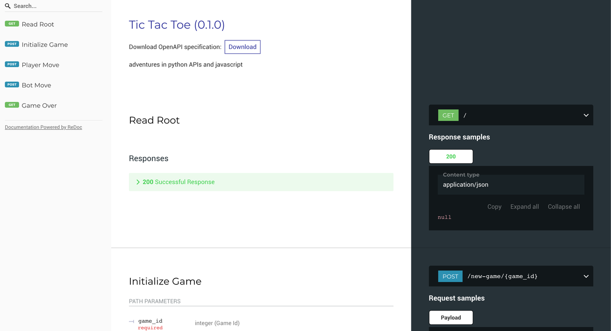

With quarantines and lay offs, I thought this would be a great time to take my little tic tac toe project to a real live app! Since playing in a jupyter notebook isn't nearly as fun as attempting to use my dog's head for one of the player symbols :)
This is mostly a brain dump/walk through my process and go over some decisions I made along the way.
This whole thing started with wanting to play around with Flask and JavaScript. This little adventure ended when my Flask app turned into an API and I figured, "hey, let's just use FastAPI and install less things". Also, as it is a framework already designed for API's that helped as well.
For the JavaScript part, I figured Vue was the way to go. Keeping it simple and being totally ok with VueJS being ~magic~. I do use Python after all ;)
Getting Up and Running
First things first, get a backend up and running! Gonna admit I had some issues with getting this part up and working. Structuring projects is a weak point for me and something I was trying to make sure went relatively decent here. I ended up going with the following tree structure:
. ├── app │ ├── __init__.py │ ├── bot │ │ ├── __init__.py │ │ ├── game │ │ │ ├── __init__.py │ │ │ ├── agent.py │ │ │ ├── gameboard.py │ │ │ └── player.py │ │ ├── tests │ │ └── utils │ │ ├── __init__.py │ │ ├── files.py │ │ └── play.py │ ├── main.py │ ├── models │ │ └── 3x3_bot.pkl │ └── scripts │ ├── __init__.py │ └── train_deploy_model.py ├── Dockerfile ├── Makefile └── requirements.txt
The script there is run right in the backend folder so the 3x3_bot.pkl will get updated. I just ran this before building the docker image as I figured this wasn't really something where I had to worry about updating the model manually as ideally it'll be learning as people interact with the model
Even though this is a pretty small, low effort app I wanted it to involve all the different deployment steps anyways. Initially I started on GCP. Only problem there was I started blowing through my credits pretty quickly... So, ended up deciding to switch over to Heroku instead. Getting the continuous integration and docker container all set up was definitely super easy! and honestly, easier than I thought it would be, but isn't that always how these things go?
API
The meat of the backend is the API that interacts with the python gameboard object. The great thing about FastAPI is how easy it is to 1) set up and 2) the use of python typing and pydantic models.
As an example, these are the models for the request/response bodies that are expected:
class BoardInit(BaseModel): rows: int cols: int score: int class PlayerMoves(BaseModel): row: int col: int class PlayerResponse(BaseModel): win: bool winner: int class BotResponse(BaseModel): win: bool winner: int row: int col: int
The other great thing, is the automatically populated OpenAPI docs with that snazzy Swagger UI. I personally ended up setting my default docs with ReDoc as I liked how they looked, but you've got a couple options. Take a peak:

You can also interact with the API a bit through them as well! Which you can also check out here!
The API itself consists of initializing the gameboard with a game_id associated with that game, get the bots moves, register the players moves, and reset gameboard if same gameboard object is going to be used. I'm sure there's a better way to set up the session but this was where I currently settled on.
Next steps from here are finally setting up the VueJS frontend and seeing about making the player images a Pepper and my dog Pepper, seeming like a good opportunity to refresh those graphics skills I haven't used in so long.